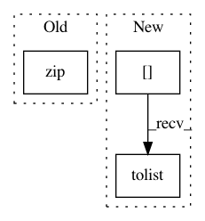

95c2a29c7f1992f78d11acfe9cdfee83a7516af2,ggplot/geoms/geom_rect.py,geom_rect,draw_group,#Any#Any#Any#Any#,47
Before Change
ymax = fn("ymax")
verts = [None] * len(xmin)
limits = zip(xmin, xmax, ymin, ymax)
for i, (l, r, b, t) in enumerate(limits):
verts[i] = [(l, b), (l, t), (r, t), (r, b)]
pinfo["fill"] = to_rgba(pinfo["fill"], pinfo["alpha"])
After Change
verts,
facecolors=fill,
edgecolors=color,
linestyles=data["linetype"].tolist(),
linewidths=data["size"].tolist(),
transOffset=ax.transData,
zorder=params["zorder"])
In pattern: SUPERPATTERN
Frequency: 3
Non-data size: 3
Instances
Project Name: has2k1/plotnine
Commit Name: 95c2a29c7f1992f78d11acfe9cdfee83a7516af2
Time: 2016-03-16
Author: has2k1@gmail.com
File Name: ggplot/geoms/geom_rect.py
Class Name: geom_rect
Method Name: draw_group
Project Name: ntucllab/libact
Commit Name: f497ac84d909cffd80d0d6b9c9166b65633c3711
Time: 2019-06-30
Author: eugene2528@gmail.com
File Name: libact/query_strategies/quire.py
Class Name: QUIRE
Method Name: __init__
Project Name: scikit-learn/scikit-learn
Commit Name: 2b655efaf26f7802e4e41f2e64e1b9abdcaa6cd2
Time: 2020-08-19
Author: thomasjpfan@gmail.com
File Name: sklearn/compose/_column_transformer.py
Class Name: ColumnTransformer
Method Name: _sk_visual_block_